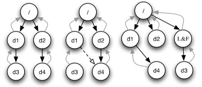
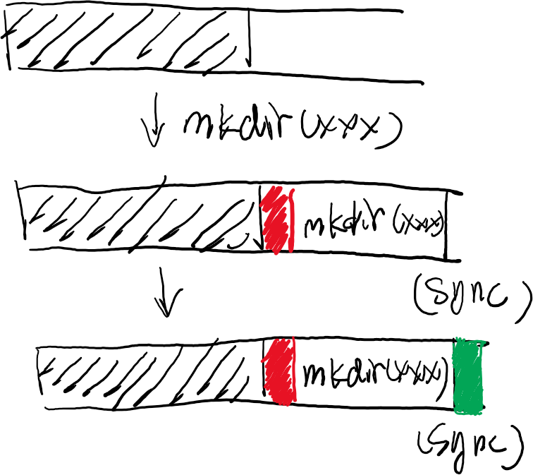
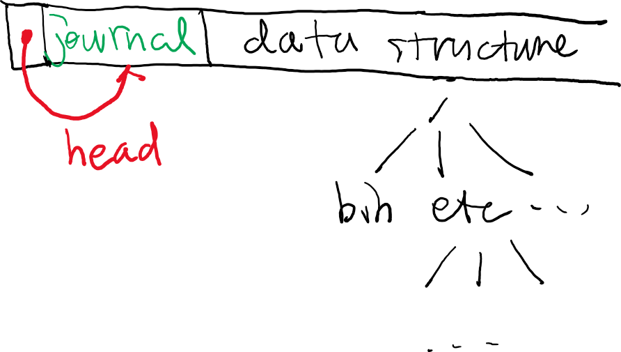

public: True class: center, middle # 文件系统：崩溃恢复与日志 蒋炎岩 <jyy@nju.edu.cn> 南京大学计算机软件研究所 --- # 本讲概述 > 我们已经在硬件层面上理解了如何使持久数据更可靠。但是，软件依然可能随时崩溃(断电) > > * 如何保证文件系统数据的可靠性？ * 磁盘上的数据结构 * 持久化：原子性的丧失 * 崩溃一致性 --- class: center, middle # 磁盘上的数据结构 --- # 文件系统：例子 ------ 考虑在FAT上创建一个目录(mkdir)的Access Path： 1. <math>b \leftarrow balloc()</math>，读取FAT 2. <math>FAT[b] \leftarrow EOF</math> 3. 写入<math>b</math>为初始数据 4. 追加写入目录文件 (假设目录文件需要一个额外的数据块) 1. <math>b' \leftarrow balloc()</math> 2. 写入目录文件 3. <math>FAT[b'] \leftarrow EOF</math> 4. <math>FAT[d_{end}] \leftarrow b'</math> --- # 文件系统缓存 对于磁盘的读请求： * 读一个已经被写过的块，可以不从磁盘读取 * 读一个未被访问过的块，.red[必须从磁盘读取] (等待) ------ 对于磁盘的写请求： * 原则上可以无限排队，让磁盘的.red[读请求先行] (减少等待时间) * 但同时最终应当被写入磁盘 (保证persistence) ---- 在上一个例子中 * .blue[缓存能显著减少磁盘的I/O] (例如，<math>b, b', d_{end}</math>都在同一个数据块中) --- class: center, middle # 持久化：原子性的丧失 --- # 原子性 原则上，我们很容易保证操作的原子性(在所有文件操作时上锁) * 但.red[实际的系统随时可能崩溃] ---- 崩溃 = 缓存数据丢失 * 不妨先假设磁盘按顺序持久化写入的数据 * (虽然这个假设并不成立) --- # 系统崩溃：原子性的丧失 考虑更简单的例子：追加写(相当于写入目录文件) 1. <math>FAT[b'] \leftarrow EOF</math> 2. <math>data[b'] \leftarrow</math> 数据 3. <math>FAT[f_{end}] \leftarrow b'</math> ---- 等同于链表操作： ```c struct block *blk = balloc(); // 找到某个blk->next == FREE blk->next = NULL; file_end->next = blk; write_data(blk); ``` --- # 原子性的丧失 我们希望三个操作.red[同时]写入磁盘(.blue[原子性])，但磁盘不支持这个操作 1. <math>FAT[b'] \leftarrow EOF</math>; 2. <math>data[b'] \leftarrow</math> 数据; 3. <math>FAT[f_{end}] \leftarrow b'</math> ---- 考虑所有可能崩溃的情况 (去除重复) * <math>data[b']</math> → ❌ (random writes) * <math>FAT[f_{end}]</math> → ❌ (corrupted FAT) * <math>FAT[b']</math> → ❌ (dead block/leak) * <math>data[b']</math> → <math>FAT[f_{end}]</math> → ❌ (random writes + corrupted FAT) * <math>FAT[b']</math> → <math>data[b']</math> → ❌ (dead block x 2) * <math>FAT[b']</math> → <math>FAT[f_{end}]</math> → ❌ (corrupted file) * <math>FAT[f_{end}]</math> → <math>FAT[b']</math> → <math>data[b']</math> ✅ --- # 原子性的丧失 (cont'd) 如果希望追加写入一个文件，按任何顺序都是不行的 * dead block不是个很大的问题 * <math>FAT[b']</math> → <math>data[b']</math> → <math>FAT[f_{end}]</math>相对可以接受 * 对于一般的情形，这个讨论就困难了…… * 类比实现.blue[无锁]的并发数据结构 (还记得被并发bug支配的恐惧吗？) ---- mkdir：简单情况(目录文件不重新分配) 1. 创建一个(空的)目录文件; 2. <math>data[b] \leftarrow</math> 目录项 * 1 → 2: dead blocks * 2 → 1: corrupted filesystem (目录项指向未分配数据块) --- # ext2的例子 文件追加写(一块)，需要写入： 1. inode (size、索引); 2. 数据bitmap; 3. 数据 ---- 可能的崩溃情况： * <math>\\{1\\}</math> - corrupted filesystem * <math>\\{2\\}</math> - dead block * <math>\\{3\\}</math> - random writes * <math>\\{1,2\\}</math> - incorrect data * <math>\\{1,3\\}</math> - corrupted filesystem * <math>\\{2,3\\}</math> - dead block --- class: center, middle # 崩溃一致性 --- # 文件系统的一致性 * 文件系统对磁盘上的数据进行了一定的结构上的约定 (链表、索引、……) * 但当磁盘上的数据结构.red[不合法]或.red[不满足文件操作的语义]，文件系统就处于.red[不一致]的状态 * 链接成环 * FAT指向未分配的数据块 * 两个文件的索引共享数据块 * …… * (在正确实现文件系统的前提下不会发生) --- # 不一致的文件系统 假设某个文件系统，首先写入数据；然后写入索引；最后写入bitmap 有一个坏人…… * 做了一个有bug的文件系统，例如FAT中有环 * 将usb stick插入计算机，[系统bug](https://lkml.org/lkml/2015/12/13/187) ---- 有一个坏人…… * 写入一个巨大的文件 * 等待索引写入完毕 * 使用漏洞使system crash --- # 崩溃一致性 即便“.blue[正确]”实现了文件系统，崩溃依然可能导致文件系统出错 Crash consistency > Move the file system from one consistent state (e.g., before the file got appended to) to another atomically (e.g., after the inode, bitmap, and new data block have been written to disk). --- # File System Checking (FSCK) 在文件操作时不管崩溃一致性，但在崩溃后扫描磁盘进行补救 * 扫描inodes里的所有数据块，检查bitmap的一致性 * 检查inode数据是否“看起来合法”，否则删除 * 检查链接情况 (没有链接的inode被移到lost+found目录中) * …… 看起来就不靠谱 * 为了一点小事扫描整个磁盘(Windows也时常这样) * 而且没有人能证明这么做一定能回退到一致的文件系统状态 --- # FSCK: 的确不靠谱 e2fsck：基于启发式规则恢复；既可能损坏文件系统，也可能恢复错误 .center[] > H S Gunawi, et al. SQCK: A declarative file system checker. In *Proc. of OSDI*, 2008. --- # FSCK: 的确不靠谱 (cont'd) fsck也是程序，fsck也要访问文件系统 * 如果fsck时发生崩溃，会发生什么？ * 文件系统可能进入彻底无法恢复的状态！ > O R Gatla, et al. Towards robust file system checkers. In *Proc. of FAST*, 2018. --- class: center, middle # 实现崩溃一致性 --- # 实现崩溃一致性 Key idea * .red[使磁盘上的状态能推导出某个过去时刻的文件系统状态] ---- 借助I/O设备的一个额外功能： * `read(blk, data)`, `write(blk, data)` * `sync()`.red[保证之前数据写入磁盘后才返回] --- # 数据结构的两种表示 1. 在磁盘上保存数据结构 * FAT, ext2, ... * 因为涉及多个数据块的写入操作，因此不能保证原子性 2. 在磁盘上保存所有对数据结构的.red[操作] * 每次启动时重做这些操作，在内存里重新建立文件系统 --- # 日志(Journaling) 把.red[操作]以append only的方式记录下来 * 先写入数据 (TXBegin和数据)；然后sync * 写入TXEnd；再次sync .center[] --- # 同时维护两种表示 用一个额外的指针维护journal完成的时刻 * journal write (写入TXBegin和数据) * journal commit (TXEnd + sync) * 之后可以自由更新数据结构和指针 (完成后到达checkpoint) * procfs中有jbd的统计信息 .center[] --- # 崩溃恢复 从指针开始，向后重做journal中记录的操作 * (redo logging) * 还有一种undo logging，记录操作的inverse (数据库中常用) ---- Journaling实现了文件系统操作的.red[原子性] * 若干个block writes，要么.blue[全部发生]，要么.blue[一个都不发生] --- # 优化 批处理 * 连续两次mkdir创建两个journal transcations * 可以合并成一个，减少log的大小 Metadata journaling * 只对inode和bitmap做journaling；数据可以随意写入 * 保证文件系统的目录结构是一致的；但数据可能丢失 * 导致了[应用程序在崩溃时的data loss](https://zhuanlan.zhihu.com/p/25188921) --- # 其他保证数据一致性的方法 * 无锁算法的确是可以实现的 > G R Ganger, Y N Patt. Metadata update performance in file systems. In *Proc. of OSDI*, 1994. * 更聪明地在磁盘上保存所有对数据结构的操作 * 使用可持久化的数据结构，得到0开销的文件系统.red[快照] > Any pointer-machine data structure with no more than <math>O(1)</math> pointers to any nodes (in any version) can be made partially persistent with <math>O(1)</math> amortized multiplicative overhead and <math>O(1)</math> space per change. > > — Driscoll, Sarnak, Sleator, Tarjan - JCSS 1989 * 维护双向链接 * 为每个block维护它的owner……